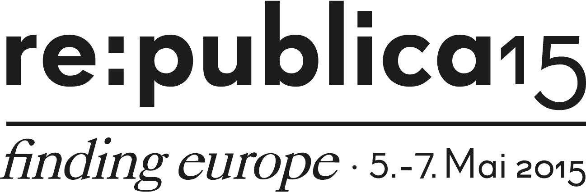

Finding Europe with Lights
We want to connect Europe with RGB-Values
© 2015 ubirch GmbHConcept & Programming
Matthias L. Jugel (@thinkberg)Willy Woitas (facebook.com/willyfetzig)
Map Design
fuenfwerken Design AGDeployment
indarium GmbHin cooperation with re:publica
